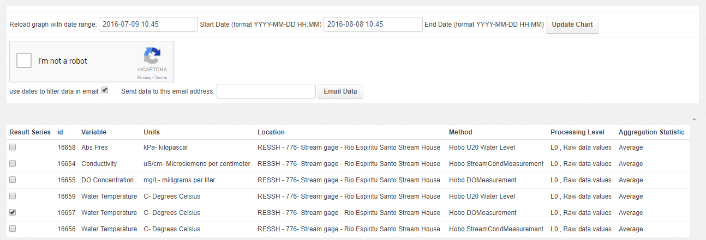
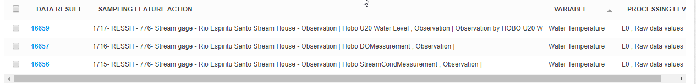

Data Visualization and URL parameters¶
Graphs presenting ODM2 Time Series can be easily shared with formatted URL parameters. if we return to the example we used in Data QAQC doc
- We looked at a timeseries with the following link: https://dev-odm2admin.cuahsi.org/Sandbox/graphfa/samplingfeature=776/resultidu=16657/popup=Anno/
We can use the interface to select different data, selecting start and end dates, or changing or adding time series by selecting different items in the checkbox list.

We can also alter the URL to get different data, If we wanted to share data for two days, say July 8th to July 10th for this time series we could add start and end dates into the URL like:
- startdate=2016-07-08
- enddate=2016-07-10
- https://dev-odm2admin.cuahsi.org/Sandbox/graphfa/samplingfeature=776/resultidu=16657/startdate=2016-07-08/enddate=2016-07-10/popup=Anno/
We can also change the time series with the resultidu URL parameter to select conductivity set it like:
Based on the URL we can see that the sampling feature used here has an id of 776:
Which is here: https://dev-odm2admin.cuahsi.org/Sandbox/odm2admin/samplingfeatures/776/change/
We could also find the site by searching for Rio Espritu Santo Stream House in the sampling features search page:
Similarly we can find the data result and associated time series result with id 16657:
https://dev-odm2admin.cuahsi.org/Sandbox/odm2admin/results/16657/change/
or we can search for Rio Espiritu Santo Stream House Water Temperature
In this case we see that water temperature is recorded by three instruments a Water level, Dissolved Oxygen (DO), and Water Conductivity sensor.
